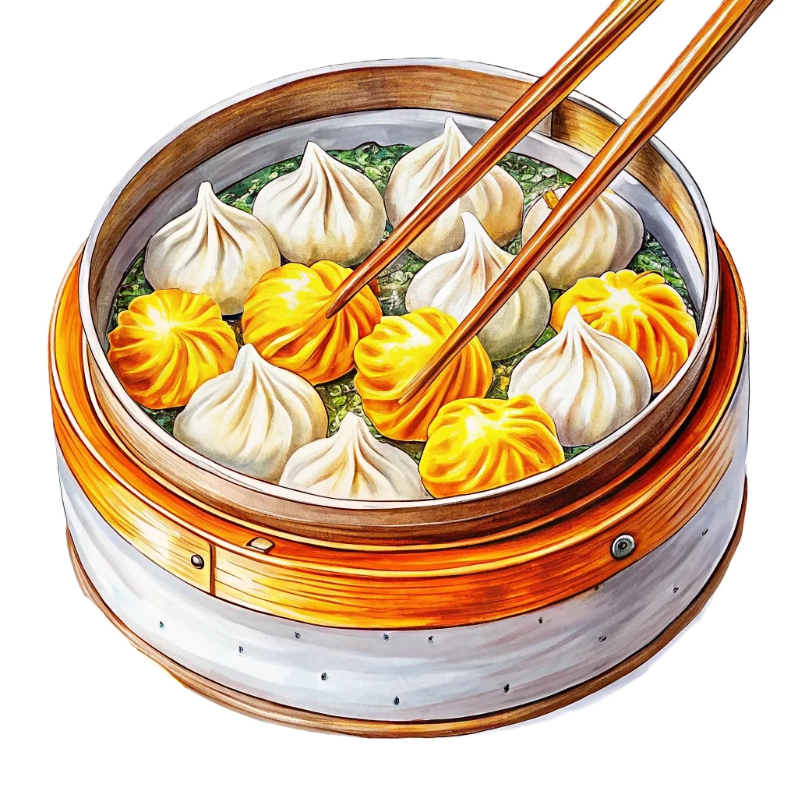

年間約148万人（2025年）の日本人が訪れる、外国人観光客数トップシェアの旅先。直行便多数・週末で行ける近さ・ハズレのないグルメで、リピーター率は約半数にのぼる。日本各地の地方空港からも直行便があり、思い立ったらすぐ行けるのが最大の魅力。
台湾は亜熱帯〜熱帯気候で、一年中どこかしらが旅行シーズン。ただし夏（6〜9月）は蒸し暑さと台風、冬（12〜2月）の台北は曇天と小雨が続きます。全体のベストは秋（10〜11月）と春（3〜4月）。南部の高雄・台南は冬でも暖かく、避寒先としても優秀です。
色が濃いオレンジほど気温が高いことを示しています。
ベスト：10〜11月（乾いて快適）・3〜4月／ 6〜9月は蒸し暑く台風シーズン。12〜2月は小雨と曇天が多い。
ベスト：11月〜3月（乾季・冬でも暖かい）／ 5〜9月は雨季でスコールが多い。
ベスト：10〜4月（台風シーズンを避けられる）／ 6〜9月は台風の通り道にあたり注意が必要。
LCC多数就航で年間を通じて安いが、旧正月（1月下旬〜2月中旬）と日本のGW・お盆・年末年始は高騰。狙い目は1月中旬・5〜6月・9月。LCCのセールなら往復2万円台も珍しくないので、セール通知の登録がおすすめ。
青天白日満地紅旗。青は青天、白い太陽は進取の精神、赤は大地を表す。
人気の観光地から穴場まで、実際に行って良かった場所を厳選してまとめました。